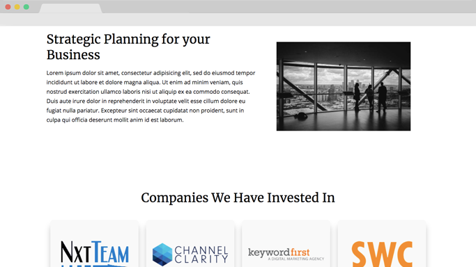
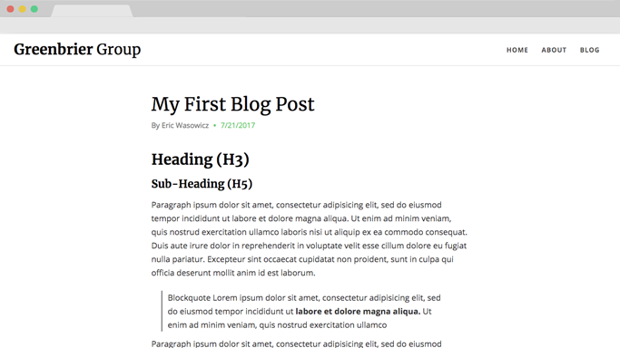

See this project on my Github
Website and CMS
June 2017 - August 2017
The site I designed for Greenbrier Group was intended to be used as means of information and a blog. Which required me to both design and integrate a CMS into the site.
Visit Concept WebsiteI was tasked with creating a website for Greenbrier Group, an investing group based in Chicago that has invested in different companies such as NxtTeam, Channel Clarity, keywordfirst, and SWC Technology Partners. The aim was to make a site with a blog and information on the investing group and their work.
This site was going to be challenging, I needed to implement a Content Management System (CMS) that would manage the general content of the site along with the blog of the site. I wanted to stick to very basic HTML, CSS, JavaScript, and PHP, so I stayed away from heavy frameworks like Wordpress or Drupal, and opted for a very lightweight CMS called CouchCMS which would be easy to implement in a plain HTML page.
I needed to convey a very modern and professional look on the site. Neutral colors such as white, grey, and black do well at conveying this, so I went with a neutral color palette with a light green accent color for buttons and links.
The site was mostly white, with a simple and minimalistic design. I kept the layout very minimal, mostly keeping text limited to one column to make it readable.
The Typography was pretty simple, I wanted to use a sans-serif font for the body text and then a serif font for the headings of the site. It is a common combination and I felt it would fit with the professionalism of the investing group.
I ended up using Open Sans for the body text and Merriweather for the headings and titles. I had the headings rendered in normal font weight.
The homepage consisted of four sections:
For the header, I put a call to action in the center of a large hero heading, with a button that brings you down to the about section of the page. I wanted to keep it pretty simple so that I could easily blend the navigation bar into the design on mobile devices.
The about section consisted of a two column layout with a small description of the investing group and then a photo on the side. You can see the typography layout perfectly here, with the serif heading and the sans-serif body text.
The investing section consisted of four animated cards. The cards have staggered entrance times for animation, coming in left to right. I wanted to implement a natural feel for these cards, and staggering the time by 100ms seemed to fulfill this.
The most challenging part of this section was getting the animations to stay very fluid even when looking at the site on a smaller screen. I ended up getting this to work through HTML manipulation with jQuery by testing for viewport size. All of the animations are done through a library, so the only way to mess with the timings is by editing the HTML.
The blog section was another very difficult page to create just because of the complications with the CMS. I needed to get the blog to sync across the site, making sure that the blog list on the home page and the blog list on the blog page were the same. They also had to link to the correct pages.
This would be hard to accomplish. I needed to go through some templating with this because this element of the site needs to apply to many pages of the site, and also link to blog posts correctly.
I ended up using CMS templating techniques to help me build this element. It was done through PHP and CouchCMS. I went for a very minimal layout, with just the title, author, date, and some of the article being displayed. I stayed away from images because I felt it would only add to the load time, and it is not really needed when given some content from the post in preview mode.
In terms of complexity and scalability, the blog post section was the most difficult because I needed to account for any type of content that the admin may want to add through CouchCMS’s WYSIWYG (What you see is what you get) editor. This required me to style different elements such as blockquotes, captions, lists, images, and even image captions.
This required me to make sure that all elements meshed together perfectly. I needed to anticipate any order of elements for blog posts to ensure the page always turned out as the admin wanted it to.
I had to venture into a new area of a website I am not really used to dealing with- text readability in long paragraphs. This meant that I needed to get more into the psychology behind reading and what makes reading long passages most comfortable.
I found that thinner viewports are very beneficial to the readability of a webpage. For desktops, laptops, and tablets the optimal width of one line of text is going to be around 60 characters. This way the user does not get lost in the text when going from line to line and also is not inconvenienced with many stoppages. 60 characters has been proven to be around the optimal line length to avoid user frustration.
For mobile viewports, you want to aim for a width around 30-40 characters. It is a smaller screen so text size is more important. Instead of messing with the margins and padding to get to that line width, you will need to edit the font size. The text should always go from edge to edge on mobile viewports.
This site proved to be very difficult due to the implications created by the CMS. Syncing elements across webpages was tough since I had to utilize PHP to store the data through the CMS. I got a lot of practice with making scalable websites and made strides in my proficiency of PHP and CouchCMS.
See this project on my Github